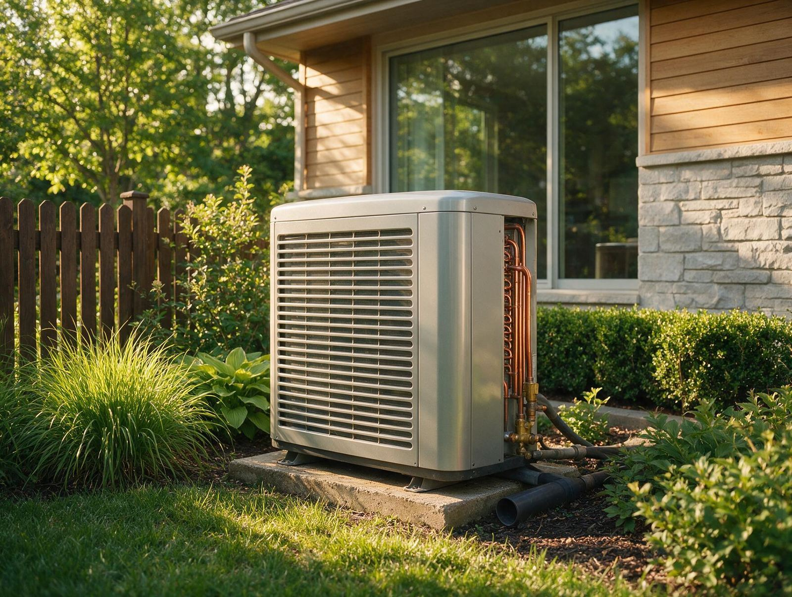

By the Editorial Team | Published: August 2026 | Last Updated: August 2026
The Framework for Choosing Between Heat Pumps and Gas Furnaces
Choosing between a heat pump and a gas furnace is one of the largest single decisions a homeowner makes about their mechanical system. The choice affects monthly utility bills for the next 15 to 20 years, determines what fuel infrastructure the house needs, sets the ceiling on winter comfort during the coldest hours, and changes the equipment room layout and venting requirements. In hot-humid climates the calculus tilts one way; in cold-dominant climates it tilts the other; and in mixed climates the answer depends on utility rates and the specifics of the house envelope.
This guide walks through the framework a homeowner and their designer use to make that choice on new construction and equipment-replacement projects. It covers how the two systems fundamentally differ, what the operating cost picture looks like at current utility rates, how sizing works for each, and where hybrid or dual-fuel systems fit as a middle path. The framework applies across most residential single-family projects and is written for readers who want an evidence-based comparison rather than a marketing pitch for either technology.
How Heat Pumps and Gas Furnaces Fundamentally Differ
A gas furnace burns natural gas or propane inside a heat exchanger and blows air across that heat exchanger to warm the house. Combustion produces flue gases that vent outside through a dedicated pipe. The furnace has one job (heat) and pairs with a separate air conditioner for cooling. A heat pump uses a refrigerant cycle to move heat from outdoor air into the house in winter and reverse the cycle to move heat out of the house in summer. It provides both heating and cooling from one piece of equipment and uses electricity as its only fuel input.
The functional consequence is that a heat pump replaces both the furnace and the air conditioner, while a gas furnace pairs with a separate AC. Total equipment count differs, mechanical closet layout differs, refrigerant line requirements differ, and venting requirements differ. These installation differences drive some of the first-cost gap between the two paths.
Climate as the First-Order Variable
Climate zone determines which technology is naturally more efficient. Heat pumps become less efficient as outdoor temperatures drop because they have to work harder to extract heat from cold air. Gas furnaces run at constant efficiency regardless of outdoor temperature because they generate heat by combustion instead of extracting it. The crossover point where a gas furnace becomes cheaper to operate than a heat pump depends on utility rates and equipment efficiency but typically falls in the 30 to 40 degree Fahrenheit range for standard heat pumps.

In hot-humid climates (ASHRAE zones 2 and 3) the vast majority of annual heating hours happen at outdoor temperatures above the crossover point, which means a heat pump operates in its efficient range nearly all the time. In cold climates (zones 6 and 7) the majority of heating hours happen below the crossover point, which favors gas. Mixed climates (zones 4 and 5) sit between, which is where dual-fuel systems and cold-climate heat pumps become the interesting design conversations.
The Operating Cost Picture
Operating cost depends on three variables: local electricity rate, local natural gas rate, and the specific efficiency of the equipment. A heat pump's efficiency is described by its heating seasonal performance factor (HSPF2 under the current test standard); higher HSPF2 means more heat delivered per unit of electricity input. A gas furnace's efficiency is described by its annual fuel utilization efficiency (AFUE); higher AFUE means more of the fuel's chemical energy becomes usable heat instead of leaving through the flue.
At U.S. average utility rates (roughly $0.16 per kWh for electricity and $1.20 per therm for natural gas as of 2026), a modern heat pump with HSPF2 of 8.5 delivers heat at roughly $0.055 per equivalent therm of output, while a 95 percent AFUE gas furnace delivers heat at roughly $0.126 per therm. The heat pump wins on operating cost in most climates at these rate ratios, which is why utility programs across warm and mixed climates have shifted toward electrification incentives.
Rate ratios vary widely by region, though. Utility markets where electricity is expensive relative to natural gas (parts of the Northeast, some pockets of California) can flip the calculation. Before assuming which technology wins on operating cost for a specific home, run the numbers with the actual local rates, which is exactly what a good HVAC designer does during the equipment-selection phase and what your utility bill comparison in how heat pumps compare to gas furnaces for hot-humid climate homes walks through in detail for one specific rate market.
Sizing and Installation Considerations
Sizing follows the same Manual J load-calculation methodology for both systems: calculate the design heating load and design cooling load based on the house envelope, climate, and internal gains, then select equipment matched to those loads. Where the two systems diverge is in the treatment of design conditions. A gas furnace is typically sized to meet 100 percent of the design heating load at the local 99th-percentile winter design temperature. A heat pump can be sized similarly, or it can be sized to meet the cooling load (which usually governs in mixed and warm climates) with supplemental heat covering the coldest heating hours.

Installation complexity differs on several fronts. Gas furnaces require a gas line, a combustion air source, a flue vent, and a condensate drain (on high-efficiency condensing models). Heat pumps require an outdoor unit, refrigerant line set penetrations through the exterior wall, and higher electrical capacity to the indoor air handler and the outdoor compressor. Neither is inherently simpler; each has its own coordination requirements that the installer navigates as routine work.
When Each System Wins on Merit
The clean cases for each technology, holding climate and rates constant:
- Heat pump wins when the climate is warm to mixed (heating hours mostly above 40 F), when the house needs both heating and cooling, when electricity rates are moderate relative to natural gas, when the house has no existing gas infrastructure, or when the homeowner values single-fuel simplicity and a smaller carbon footprint.
- Gas furnace wins when the climate is cold-dominant (heating hours mostly below 30 F), when natural gas is very cheap relative to electricity, when the house already has robust gas service, when the homeowner wants the highest possible peak-hour heating output regardless of outdoor temperature, or when a legacy AC that still has service life pairs well with a heating-only replacement.
- Dual-fuel hybrid wins in the middle ground: mixed climate, moderate rate ratios, and homeowners who want the best of both worlds. The system runs the heat pump when it is efficient and switches automatically to gas when outdoor temperatures cross the pre-set economic changeover point.
The Comparison Framework at a Glance
| Dimension | Heat pump | Gas furnace |
|---|---|---|
| Fuel input | Electricity only | Natural gas or propane |
| Cooling included | Yes (reverses in summer) | No (needs separate AC) |
| Efficiency metric | HSPF2 for heating, SEER2 for cooling | AFUE for heating |
| Best climate fit | Warm to mixed (zones 2 to 5) | Cold-dominant (zones 5 to 7) |
| Efficiency vs. outdoor temperature | Falls as outdoor T drops | Constant regardless of outdoor T |
| Typical first-cost premium | Higher on new construction (integrated system) | Lower baseline (furnace only) but AC required separately |
| Venting requirement | None | Dedicated flue vent |
Frequently Asked Questions
Is a heat pump enough by itself in a hot-humid climate?
Yes, in nearly all cases. A properly sized single-stage or variable-speed heat pump handles both the cooling load (which dominates the annual energy use in these climates) and the heating load (which is usually modest and rarely drops below the heat pump's efficient operating range). Adding electric resistance backup at the air handler is standard practice as an emergency supplement, but the backup rarely runs in normal winter operation.
How is a heat pump's efficiency reported and how do the numbers compare across models?
Current U.S. efficiency ratings use HSPF2 for heating and SEER2 for cooling. Both are seasonal averages that reflect real-world performance across the range of operating temperatures the equipment sees in a typical year. Federal minimum HSPF2 for split-system heat pumps is 7.5 as of 2023; ENERGY STAR certified models start at HSPF2 of 8.1 and top-tier variable-speed models exceed 9.0. Higher HSPF2 delivers more heat per kWh of electricity.
What is a cold-climate heat pump and when does it make sense?
Cold-climate heat pumps are a category of equipment specifically engineered to maintain rated capacity at outdoor temperatures well below the standard heat pump crossover point, typically down to zero degrees Fahrenheit and colder. They use variable-speed inverter compressors, enhanced vapor-injection cycles, and larger outdoor coils to sustain performance in the cold. They cost more than standard heat pumps but often eliminate the need for gas backup in cold climates, which changes the whole system architecture.
Does natural gas cost less than electricity everywhere?
No. The rate ratio varies substantially across U.S. utility markets. Some regions with abundant gas production have very cheap gas relative to electricity, which favors furnaces on operating cost. Other regions with cheap grid electricity (hydro-dominant, nuclear-dominant, or heavily solar) flip the ratio and favor heat pumps. The homeowner's actual utility bills for the past 12 months are the best source of ground truth for a specific address.
How does equipment lifespan compare between the two systems?
A well-maintained gas furnace typically delivers 15 to 20 years of service before major components fail or efficiency declines enough to justify replacement. A heat pump typically delivers 12 to 15 years for the same reason, with the outdoor compressor being the most common life-limiting component. On a full-system-cost basis (heat pump alone vs. furnace plus separate AC), lifespans are similar because the AC in a furnace-plus-AC pairing has the same 12 to 15 year expectancy.
Do heat pumps handle humidity as well as an air conditioner plus furnace pair?
Yes, in cooling mode a heat pump is functionally identical to an air conditioner and dehumidifies just as effectively. Variable-speed heat pumps often outperform single-stage AC units on humidity control because their long low-speed run times remove more moisture per hour of runtime. Humidity concerns are not a reason to prefer a furnace-plus-AC pair over a heat pump.
Does installation take longer for one system than the other?
Total labor is comparable on new construction because both systems require similar duct installation, electrical connections, and commissioning. On retrofit projects that already have gas service and existing ductwork, a like-for-like furnace replacement is often the fastest install. A gas-to-heat-pump conversion takes longer because it requires new electrical capacity, refrigerant line-set penetrations, and sometimes duct modifications to handle the heat pump's typically lower delivered air temperature.
Do federal or state incentives change the math on which system to pick?
Yes, meaningfully in some markets. The federal Energy Efficient Home Improvement Credit and various state and utility incentive programs offer substantial rebates on qualifying high-efficiency heat pumps, which can offset thousands of dollars of first cost. Rebates on high-efficiency gas furnaces exist too but are typically smaller. Homeowners should check current incentives for their specific address before finalizing the equipment selection, because a $2,000 rebate can change the cash-flow picture significantly.
